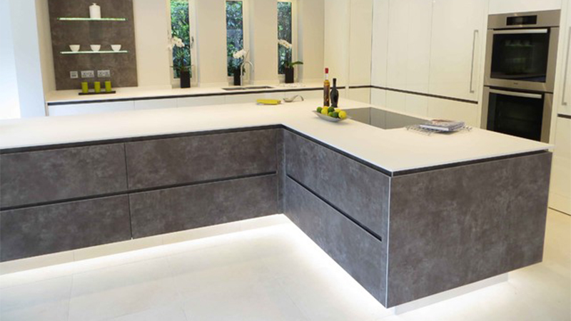

E' un materiale caldo al tatto e simile alla pietra naturale. Questo materiale è composto da due terzi di minerali naturali e da una piccola percentuale di resine ad alta resistenza. Tale composizione conferisce alcune particolarità esclusive: assenza di pori, proprietà antibatteriche senza alcun tipo di additivo, manutenzione ridotta, nonché riparazione e pulizia agevoli.
Data l’analogia con la lavorazione del legno, le lastre possono essere tagliate, unite o sottoposte a termoformatura per ottenerne pezzi ricurvi, per dare vita a forme e progetti inattuabili con altri materiali.
È possibile creare spazi senza giunti, il che impedisce l’assorbimento di liquidi e ne agevola la pulizia e la manutenzione.
Questo materiale è disponibile in una vasta gamma di colori tra i quali spicca la finitura in bianco, puro e neutro.
È un materiale ecologico, dato che può essere riciclato al 100%.
Pietra Sinterizzata

E' una pietra sinterizzata formata in grandi lastre, che coniuga il pregio estetico alle grandi dimensioni ed elevatissime proprietà fisico meccaniche, unendo le potenzialità del porcellanato tecnico con la consistenza, la lavorabilità, l’eleganza e la naturalezza dei colori e delle finiture tipiche della pietra naturale.
E’ versatile
può essere trasformato nei più diversi prodotti per l’edilizia e l’arredamento, e nelle dimensioni richieste dal progettista. Essendo un materiale a “tutta massa” e facile da lavorare, può essere utilizzato per un’infinità di applicazioni: dai rivestimenti di pareti interne ed esterne alle pavimentazioni, dai piani cucine alle facciate ventilate.
La superficie è totalmente priva di porosità, non assorbe, non si macchia, è resistente all’insediamento di batteri e muffe. Inoltre, si pulisce facilmente con acqua calda e un panno.
é un prodotto incorruttibile dal tempo e dagli agenti atmosferici, inattaccabile da acidi, basi e solventi, durissimo, resistente all’urto e all’abrasione, incombustibile, non gelivo e insensibile all’azione degradante dei raggi UV. In più, è totalmente antigraffiti è antibatterico ed è un materiale completamente inerte.